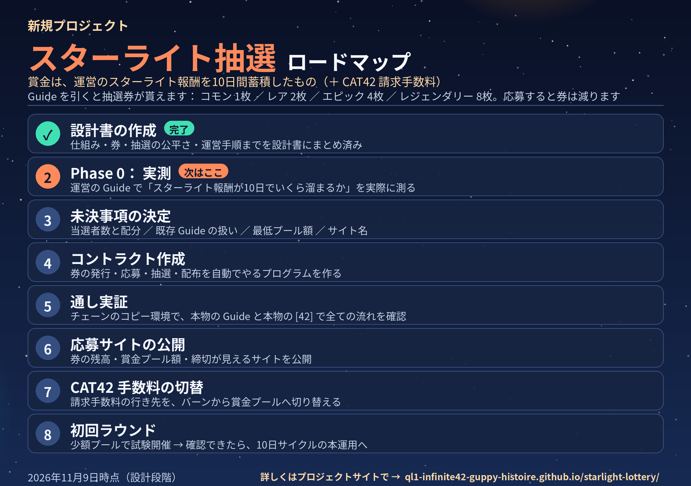

Guppy's Guide グッピーズガイド — Don't Panic
運営（Guppy's Guide）のスターライト報酬を10日間蓄積して賞金プールにし、当選者に配布する抽選プロジェクトです。参加者の報酬は集めません。賞金の主原資は運営自身の報酬で、副原資として CAT42 請求手数料が加わります。
運営の Guide のスターライト報酬を10日間受け取らずに蓄積し、まとめて賞金にします。あわせて CAT42 請求サイトの手数料（請求額の5%、ZAP）も、開始後はバーンではなくプールへ回します。
Guide を新しく引くと、その Guide 1枚につき1回だけ抽選券が貰えます。
コモン 1枚 ／ レア 2枚
エピック 4枚 ／ レジェンダリー 8枚
券は売買できない形にします（二重取り・転売の防止）。
券を使って応募すると、応募した分だけ券は減ります（当たらなくても戻りません）。当選者は締切後に決まる公開の乱数（drand）で決めるので、運営でも結果を操作できず、誰でも検証できます。サイクルは10日ごとです。

仕組み・抽選券・抽選の公平さ・運営手順までを設計書にまとめました（設計書を読む ↗）。
運営の Guide で「スターライト報酬が10日でいくら溜まるか」を実際に測ります。測る前に金額の見込みは出しません。
当選者数と配分（設計書の推奨は3名に 50%／30%／20%）、開始前に発行された既存 Guide の扱い、最低プール額、サイト名を決めます。
券の発行・応募・抽選・配布を自動でやるプログラム（コントラクト）を 42 Chain 上に作ります。運営でも賞金の引き出しや当選者の恣意的な選択はできない設計です。
チェーンのコピー環境で、本物の Guide と本物の [42] を使って「券の請求 → 応募 → 抽選 → 配布」の全てを通しで確認します。ここを通らないものは公開しません。
券の残高・賞金プール額（と証跡）・締切までの時間・当選者履歴が見えるサイトを公開します。
CAT42 請求手数料の行き先を、現在のバーン（焼却）から賞金プールへ切り替えます。過去にバーン済みの分は対象外です。
少額プールで試験開催し、配布まで確認できたら、10日サイクルの本運用に入ります。